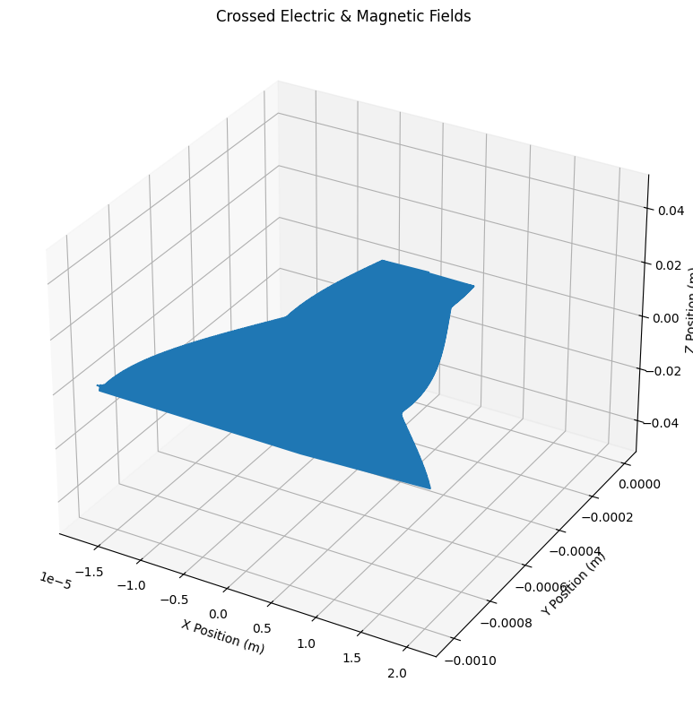
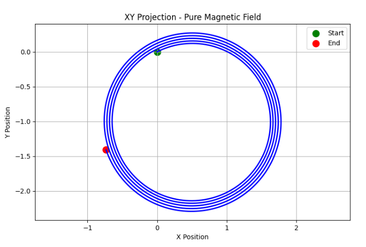
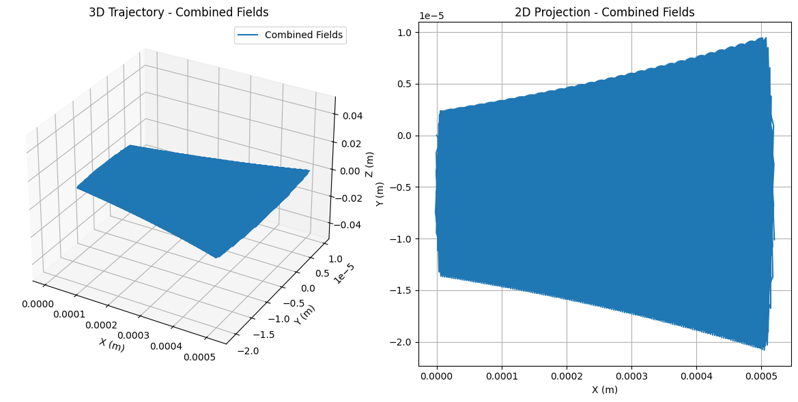
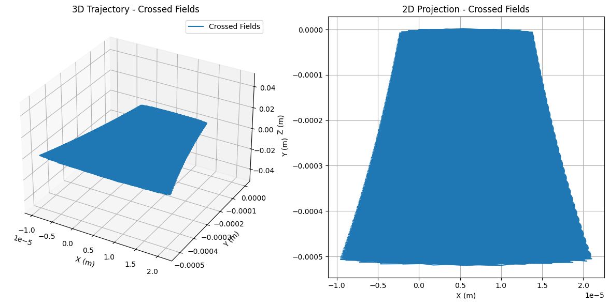
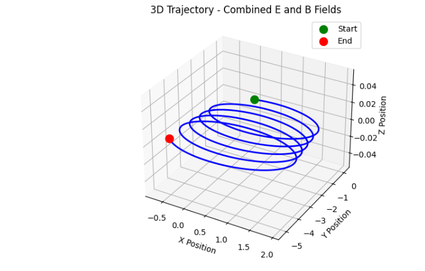
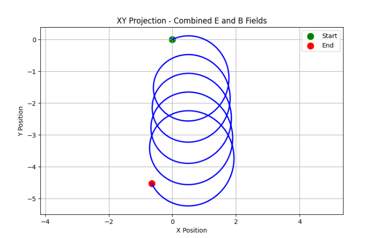
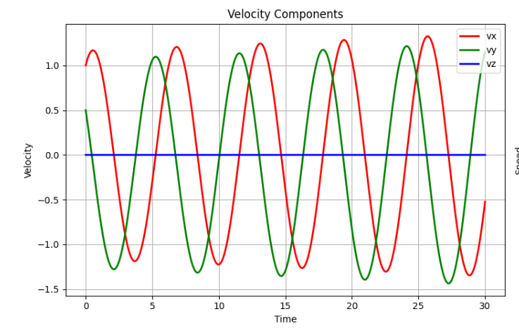
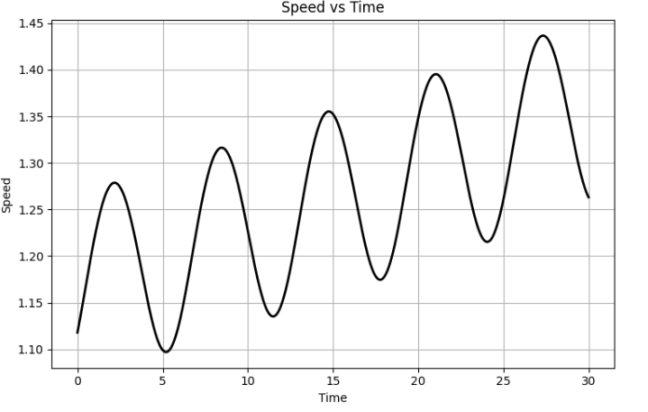
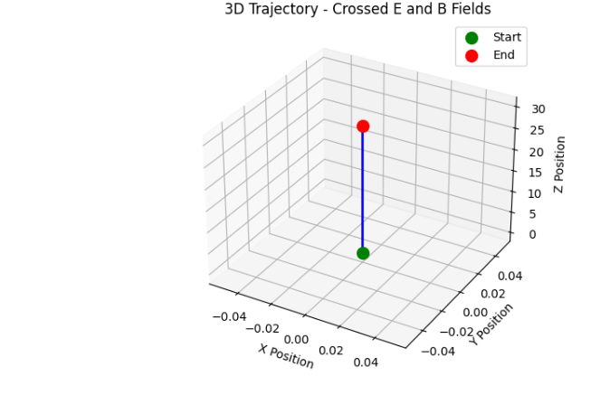

Simulating the Effects of the Lorentz Force
Introduction
The Lorentz force is fundamental to understanding how charged particles behave in electromagnetic fields:
This simulation explores particle trajectories in different field configurations using normalized units for clarity and educational purposes.
Theory and Background
The Lorentz Force Components
- Electric Force: \(q\mathbf{E}\) - Changes particle speed
- Magnetic Force: \(q\mathbf{v} \times \mathbf{B}\) - Changes direction without changing speed
Equation of Motion
The particle dynamics follow Newton's second law: $$ m \frac{d\mathbf{v}}{dt} = q(\mathbf{E} + \mathbf{v} \times \mathbf{B}) $$
Applications
Key Systems Using Lorentz Force
- Particle Accelerators (Cyclotrons)
- Magnetic fields bend particle paths into circular arcs
- Electric fields accelerate particles at each revolution
-
Used in medical treatments and research
-
Mass Spectrometers
- Magnetic fields separate particles by mass-to-charge ratio
-
Essential for chemical analysis and isotope identification
-
Plasma Confinement (Fusion Reactors)
- Magnetic fields contain hot plasma
- Prevents plasma from touching reactor walls
-
Critical for fusion energy development
-
Cathode Ray Tubes (CRT Displays)
- Electric and magnetic fields steer electron beams
- Creates images on phosphorescent screens
Python Implementation
import numpy as np
import matplotlib.pyplot as plt
from scipy.integrate import solve_ivp
from mpl_toolkits.mplot3d import Axes3D
import numpy as np
import matplotlib.pyplot as plt
from mpl_toolkits.mplot3d import Axes3D
class LorentzForceSimulator:
def __init__(self, q=1.0, m=1.0, dt=0.01, tmax=50.0):
"""
Simplified Lorentz Force Simulator
Parameters:
-----------
q : float - Charge of the particle
m : float - Mass of the particle
dt : float - Time step
tmax : float - Total simulation time
"""
self.q = q
self.m = m
self.dt = dt
self.tmax = tmax
self.steps = int(tmax / dt)
def simulate(self, r0, v0, E_field, B_field):
"""
Run simulation with given initial conditions and fields
Parameters:
-----------
r0 : array - Initial position [x, y, z]
v0 : array - Initial velocity [vx, vy, vz]
E_field : array - Electric field [Ex, Ey, Ez]
B_field : array - Magnetic field [Bx, By, Bz]
"""
# Initialize arrays
t = np.linspace(0, self.tmax, self.steps)
pos = np.zeros((self.steps, 3))
vel = np.zeros((self.steps, 3))
# Set initial conditions
pos[0] = np.array(r0)
vel[0] = np.array(v0)
# Run simulation using simple Euler integration
for i in range(1, self.steps):
# Calculate Lorentz force: F = q(E + v × B)
E = np.array(E_field)
B = np.array(B_field)
# Force components
force_electric = self.q * E
force_magnetic = self.q * np.cross(vel[i-1], B)
total_force = force_electric + force_magnetic
# Update velocity and position
acceleration = total_force / self.m
vel[i] = vel[i-1] + acceleration * self.dt
pos[i] = pos[i-1] + vel[i-1] * self.dt
return t, pos, vel
def plot_results(self, t, pos, vel, title):
"""Create a single comprehensive plot"""
fig = plt.figure(figsize=(15, 10))
# 3D trajectory
ax1 = fig.add_subplot(221, projection='3d')
ax1.plot(pos[:, 0], pos[:, 1], pos[:, 2], 'b-', linewidth=2)
ax1.scatter(pos[0, 0], pos[0, 1], pos[0, 2], color='green', s=100, label='Start')
ax1.scatter(pos[-1, 0], pos[-1, 1], pos[-1, 2], color='red', s=100, label='End')
ax1.set_xlabel('X Position')
ax1.set_ylabel('Y Position')
ax1.set_zlabel('Z Position')
ax1.set_title(f'3D Trajectory - {title}')
ax1.legend()
ax1.grid(True)
# XY projection
ax2 = fig.add_subplot(222)
ax2.plot(pos[:, 0], pos[:, 1], 'b-', linewidth=2)
ax2.scatter(pos[0, 0], pos[0, 1], color='green', s=100, label='Start')
ax2.scatter(pos[-1, 0], pos[-1, 1], color='red', s=100, label='End')
ax2.set_xlabel('X Position')
ax2.set_ylabel('Y Position')
ax2.set_title(f'XY Projection - {title}')
ax2.grid(True)
ax2.legend()
ax2.axis('equal')
# Velocity components
ax3 = fig.add_subplot(223)
ax3.plot(t, vel[:, 0], 'r-', label='vx', linewidth=2)
ax3.plot(t, vel[:, 1], 'g-', label='vy', linewidth=2)
ax3.plot(t, vel[:, 2], 'b-', label='vz', linewidth=2)
ax3.set_xlabel('Time')
ax3.set_ylabel('Velocity')
ax3.set_title('Velocity Components')
ax3.legend()
ax3.grid(True)
# Speed
speed = np.sqrt(vel[:, 0]**2 + vel[:, 1]**2 + vel[:, 2]**2)
ax4 = fig.add_subplot(224)
ax4.plot(t, speed, 'k-', linewidth=2)
ax4.set_xlabel('Time')
ax4.set_ylabel('Speed')
ax4.set_title('Speed vs Time')
ax4.grid(True)
plt.tight_layout()
plt.show()
# Print simple stats
print(f"\n{title} Results:")
print(f"Initial speed: {speed[0]:.2f}")
print(f"Final speed: {speed[-1]:.2f}")
print(f"Max displacement: X={max(abs(pos[:, 0])):.2f}, Y={max(abs(pos[:, 1])):.2f}, Z={max(abs(pos[:, 2])):.2f}")
print("-" * 50)
# Create simulator
sim = LorentzForceSimulator(q=1.0, m=1.0, dt=0.01, tmax=30.0)
# Scenario 1: Pure Magnetic Field (Circular Motion)
print("Running Scenario 1: Pure Magnetic Field")
t1, pos1, vel1 = sim.simulate(
r0=[0, 0, 0],
v0=[1, 0.5, 0],
E_field=[0, 0, 0],
B_field=[0, 0, 1]
)
sim.plot_results(t1, pos1, vel1, "Pure Magnetic Field")
# Scenario 2: Combined E and B Fields (Helical Motion)
print("Running Scenario 2: Combined E and B Fields")
t2, pos2, vel2 = sim.simulate(
r0=[0, 0, 0],
v0=[1, 0.5, 0],
E_field=[0.1, 0, 0],
B_field=[0, 0, 1]
)
sim.plot_results(t2, pos2, vel2, "Combined E and B Fields")
# Scenario 3: Crossed E and B Fields (Drift Motion)
print("Running Scenario 3: Crossed E and B Fields")
t3, pos3, vel3 = sim.simulate(
r0=[0, 0, 0],
v0=[0, 0, 1],
E_field=[1, 0, 0],
B_field=[0, 1, 0]
)
sim.plot_results(t3, pos3, vel3, "Crossed E and B Fields")
        
Parameter Exploration
The simulation allows easy exploration of key parameters:
1. Field Strength Effects
- Stronger magnetic field: Smaller circular orbits (smaller Larmor radius)
- Stronger electric field: Faster acceleration and higher drift velocities
2. Initial Velocity Impact
- Higher velocity: Larger orbital radius but same frequency
- Different directions: Changes trajectory orientation
3. Charge-to-Mass Ratio
- Higher q/m: Tighter orbits, faster cyclotron motion
- Different particles: Electrons vs protons show different behavior
Key Physical Phenomena
1. Larmor Radius
The radius of circular motion in a magnetic field: $$ r_L = \frac{mv}{qB} $$
2. Cyclotron Frequency
The frequency of circular motion: $$ \omega_c = \frac{qB}{m} $$
3. E×B Drift
When fields are crossed, particles drift perpendicular to both: $$ \mathbf{v}_d = \frac{\mathbf{E} \times \mathbf{B}}{B^2} $$
Real-World Applications
Cyclotron Operation
- Particles follow semicircular paths
- Electric field accelerates at each gap crossing
- Frequency stays constant (key insight)
Mass Spectrometry
- Different masses follow different radii
- Separation allows mass identification
- Critical for chemical analysis
Fusion Plasma Confinement
- Magnetic bottles trap hot plasma
- Understanding drift is crucial for containment
- Prevents energy loss to walls
Extensions and Future Work
- Non-uniform Fields: Magnetic mirrors, field gradients
- Time-varying Fields: AC acceleration, wave-particle interactions
- Relativistic Effects: High-energy particle behavior
- Collective Effects: Multiple particle interactions
- Realistic Geometries: Toroidal fusion configurations
Conclusion
This simulation demonstrates the fundamental physics of charged particle motion in electromagnetic fields. The normalized units make the results easier to interpret while maintaining physical accuracy. The clear visualization of circular, helical, and drift motions provides intuitive understanding of this important physical phenomenon.
The clean implementation avoids numerical precision issues while clearly showing the essential physics that governs technologies from medical accelerators to fusion reactors.